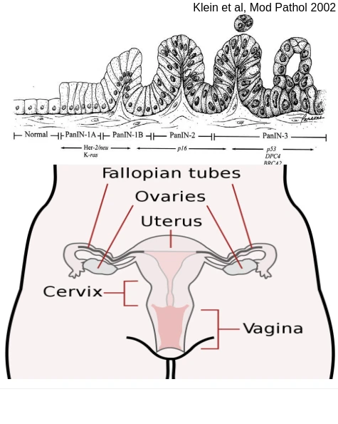
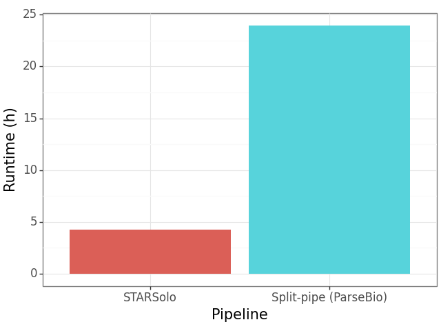
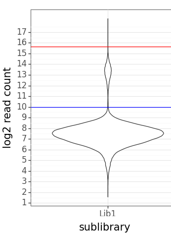
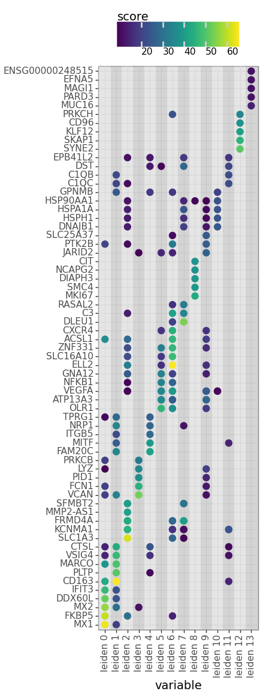

scRNAseq of ovarian cancer tumor asociated macrophages
Author: Florian Finkernagel, 2024-09-06Ovarian cancer (OC) as a public health problem
- 65,000 cases / anno (E.U.)
- 42,000 deaths / anno (E.U.)
-
Survival rates post diagnosis:
- 2 years = 65%
- 5 years = 44%
- 10 years = 36%
-
Risk factors:
- genetics
- age
- hormone replacement therapy
- obesity
| Cause of death | Rate |
|---|---|
| All causes | 818 |
| All cancer | 200 |
| Ischaemic heart disease | 94 |
| Breast cancer | 33 |
| Lung cancer | 31 |
| Colon cancer | 23 |
| Diabetis | 19 |
| Pancreatic cancer | 14 |
| Ovarian cancer | 11 |
| Uterine cancer | 7 |
| Cervix cancer | 4 |
| Transport accidents | 3 |
Source: Eurostat, standardized death rate, 2014, females only
Ovarian carcinoma biology
-
4 subgrops of epithelial OC
- Serous
- Mucinous
- Endometrioid
- Clear cell
- High grade serous OC (HGSOC) - most common
- HGSOC sensitive to platin based chemotherapy
- p53 mutated (>95%)
- Copy number driven
- serous tubal intraepithelial carcinoma

Two microenvironments

Question and experimental setup
"Mixed" macrophage polarization - artifact of bulk RNAseq, or real?
3 Patients, ascites and omentum TAMs
ParseBIo WT mini kit (10k cells, 1-12 samples)
Split-pipe pipeline
- Must be requested
- Problematic license
- Straightforward (if unsophisticated Python)
- Based on STAR + pre & postprocessing
- Buggy 'argument parsing'
- Slow
STARsolo pipeline
- Open source
- Almost 'one stop solution'


The R/T reverse transcription speciality
Two reverse transcriptions per cell.
The R/T reverse transcription speciality
R projected into T.
Reads per cell
- 2.221.184 barcodes observed
- 11.050 with 1024+ reads
- Gene filter: 30 cells / 100 reads
- Cell Filter: min. 100 reads. Max 5x median (50k) reads
- 11.031 cells

Mitochondrial content

Read depth per cell
 Overplotting
Overplotting
 Anti-overplotting
Anti-overplotting
UMAP Leiden clustering

Automated Cell Type annotation (SCSA)

Obviously wrong.
Leiden clustering (repeat)
Cluster markers
Human protein Atlas

Manual Cell Type annotation

T Cell confirmation


UMAP by Condition

UMAP by donor

UMAP cell type & donor


Mph_Asc_193
M1 markers

M2 markers


Summary
- ParsebBio Evercode with fixed cells works
- Distinguishing Cell types is scRNAseq easy mode
- There are no M1 & M2 double (very) positive cells in asc OC193